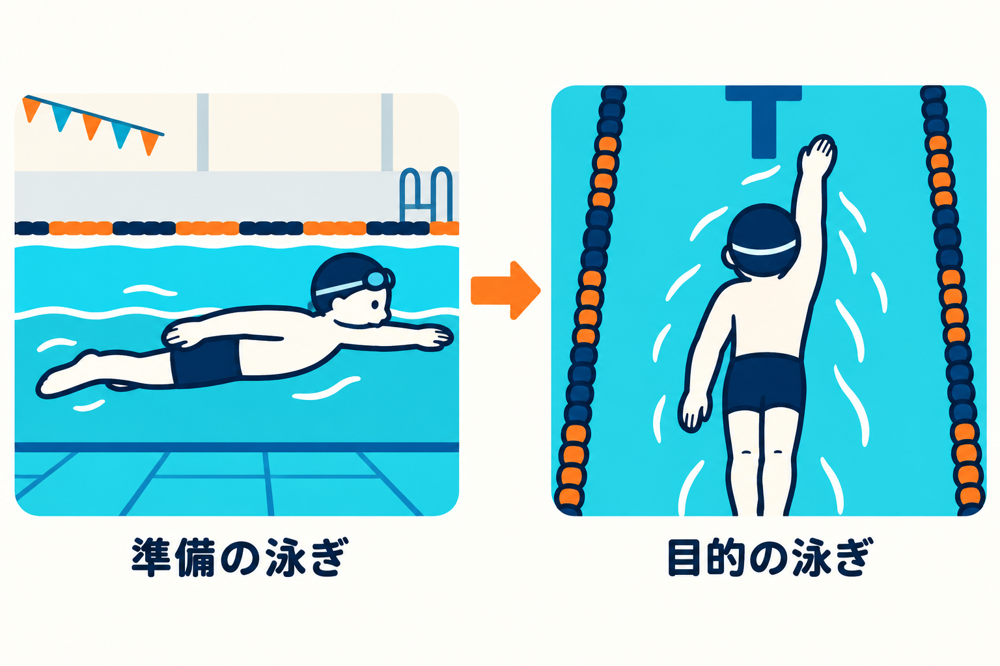
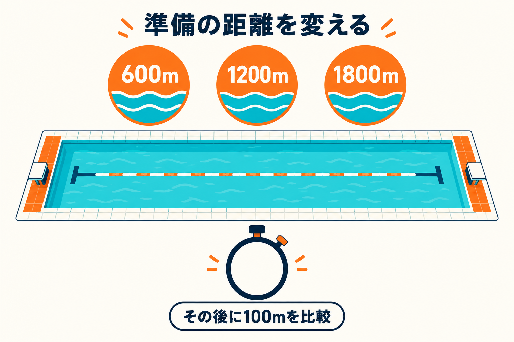
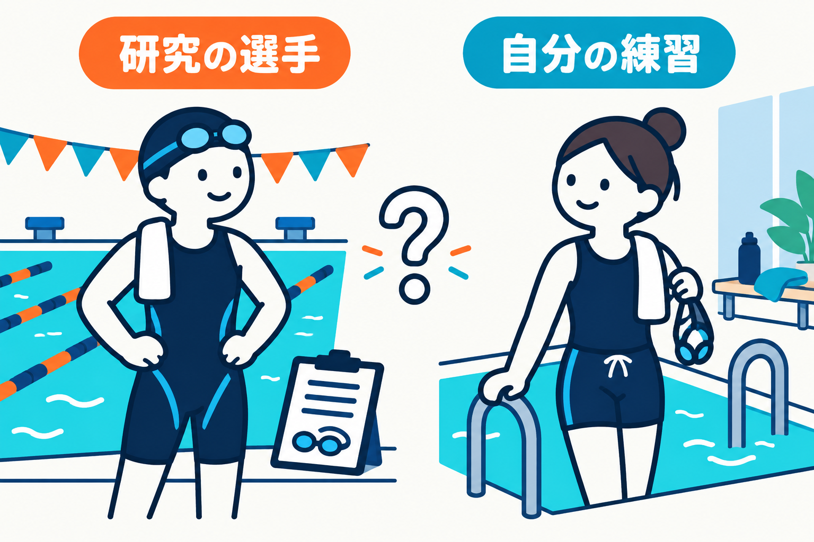
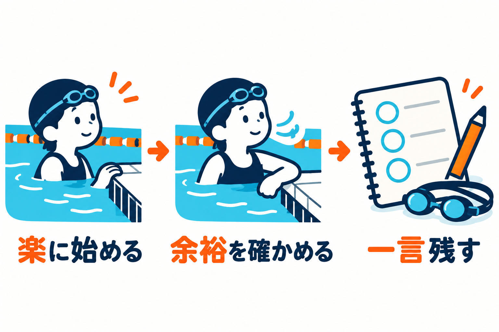

SWIMMING RESEARCH / 12
泳ぐ前の準備、長いほどいい？
2026年10月27日 · ウォーミングアップと準備の量

プールに着いたら、まず何本かゆっくり泳ぐ。「早く練習を始めたい」と思う日もあれば、「まだ身体が動かないから、もっと泳いでおこう」と思う日もあります。準備の泳ぎは、どこまで続ければよいのでしょう。
ウォーミングアップは、距離を稼ぐためではなく、その後にしたい泳ぎへつなぐための時間です。 競泳選手の研究では、準備をしたほうが速く泳げた例があります。一方で、準備の距離を長くした条件が、よい結果にならなかった研究もあります。
そこで今回は、「準備をするか、しないか」だけでなく、「何のために、どれくらいするか」を考えます。選手のメニューをそのまま写すのではなく、自分の最初の数本を見直すための読み物です。
1｜準備の泳ぎは、その後につながっている？
ここでいうウォーミングアップは、本格的な練習やレースに入る前の準備運動です。この記事では、とくに水の中で行う準備の泳ぎに注目します。準備も運動の一部なので、「泳いだ距離が多いほど、あとでよい泳ぎができる」とは限りません。
たとえば今日は、息継ぎを慌てずに行う練習をしたいとします。準備のあとにすでに息が苦しく、顔を上げることだけで精いっぱいなら、練習で確かめたい動きへ注意を向けにくくなります。これは説明のための例ですが、準備の出来を考えるときには、終えた距離だけでなく、その後に取り組める状態かを見ると、目的がはっきりします。
研究ではどうでしょう。Neivaらは、競泳選手20人に、別の日に二つの条件で100mを全力で泳いでもらいました。一つは普段に近い1000mの準備をしてから、もう一つは事前の準備をせずに泳ぐ条件です。条件の順番が結果に偏りを作らないように、順序も調整して比較しました。研究1
結果は、全員同じではありませんでした。20人のうち3人は、準備をしない日のほうが速く泳いでいます。それでも、全員のタイムを足して人数で割った「平均」では、準備をした日のほうが約0.95秒速くなりました。100mの平均タイムは、準備ありで67.15秒、準備なしで68.10秒です。みんなの結果をまとめた答えが、そのまま一人ひとりの答えになるわけではない。 数字を読むときに、ここを分けておきます。
準備は、その後にしたい泳ぎへつなぐ

研究1｜競泳選手20人・100mの平均タイム
- 1000mの準備あり
- 67.15秒
- 事前の準備なし
- 68.10秒
平均は準備ありが約0.95秒速い。ただし3人は準備なしが速かった。全員への保証ではありません。
息や動きに余裕を残して、練習へ入れるか。
選手が、その日の100mを何秒で泳いだか。
ここで測ったのは、その日の100mのタイムです。何週間も練習した後の上達や、けがの予防を確かめた研究ではありません。また、参加者は週に平均8回ほど練習する選手でした。水に慣れ始めた人へ「まず1000m泳ぎましょう」と勧める数字ではありません。
この研究から持ち帰りたいのは、準備の泳ぎを単なる儀式にせず、続く泳ぎとの関係で考えられる、という視点です。では、準備を増やせばもっとよくなるのでしょうか。
2｜長く泳いでおけば、もっとよくなる？
「あと何本か泳げば、もっとよい準備になるかな」。たとえば、予定した本数を泳ぎ終えても、そう迷う日があるかもしれません。けれど、準備に使った距離がいちばん長い日が、その後もいちばん速いとは限りませんでした。
別の研究では、全国レベルの男子選手11人が、600m・1200m・1800mという三つの準備を別々の日に行い、その後の100mクロールを比べました。準備には、いつもの練習に近い泳ぎや、動きを一つ取り出して練習する「ドリル」が含まれます。実施する順番は、くじ引きのように偶然で決める方法を使っています。研究2
25mプールで考えると、600mは端から端まで24本、1200mは48本、1800mは72本です。これは選手が実験で泳いだ量を想像するための換算です。「一般の人もこの本数をこなす」という目標ではありません。いちばん長い条件は、いちばん短い条件の3倍の距離でした。
長くすれば、必ずよくなるわけではない

研究2｜男子競泳選手11人・別の日に比較
| 準備の距離 | 25mなら | 100mの結果 |
|---|---|---|
| 600m | 24本 | 59.38秒 |
| 1200m | 48本 | 59.29秒 |
| 1800m | 72本 | 60.18秒 |
1本＝端から端まで25m。距離も本数も実験条件で、あなたへの推奨量ではありません。
準備の距離を600m・1200m・1800mに変えた。
その後に測る距離は、三条件とも100m。1800m条件は他の二つより遅かった。
他人の距離を目標にせず、準備の量とその後の泳ぎを分けて見る。
その後の100mの平均タイムは、600mの準備で59.38秒、1200mで59.29秒、1800mで60.18秒でした。この実験では、長い1800mの準備のあとが、ほかの二つより遅い結果になりました。準備をたくさん行うほど、結果が一直線によくなるわけではなかったのです。
ただし、この並びをそのまま「誰にでもいちばん合う距離のランキング」にすることはできません。600mと1200mの平均値の小さな差だけを見て、自分にも1200mがいちばん合うと決めることもできません。人数が少なく、男子の競泳選手が100mを泳ぐ条件での比較だからです。
長い準備で何が起きたかは、距離だけの問題とも言い切れません。準備でどんな速さの泳ぎを入れたか、本人が普段どれだけ練習しているかなども関わります。「長くすると必ず疲れる」と原因を一つに決めるより、量を増やすことと、よい準備になることを分けて考えるのが、この結果の使いどころです。
準備を済ませた達成感と、本番の泳ぎやすさがいつも一致するとは限らない。そのことを知っておけば、「まだ足りない気がするから追加する」という判断に、いったん立ち止まれます。
3｜選手の距離より、自分の目的から考える
たとえば、隣の人がまだ泳いでいると、自分ももう少し続けたくなるかもしれません。でも、その人は次に速い泳ぎを練習し、自分は息継ぎを一つ確かめたいのかもしれない。準備の終わりを、隣の人とそろえる必要はありません。
研究に出てきた1000mや1200mは、あなたが必ず泳がなければならない距離ではありません。普段の練習が短い人にとっては、それだけで一日の練習量になるかもしれません。競技会の100mを速く泳ぐ準備と、教室で一つの動きを覚える準備でも、続く活動が違います。
研究の数字を、自分のノルマにしない

日頃から泳ぐ競泳選手が、100mを全力で泳ぐ条件。
泳力・普段の量・今日の目的から、始め方を考える。
米国のマスターズ水泳団体U.S. Masters Swimmingの解説も、普段の練習量、現在の体力、出場種目や日程などを踏まえて準備を考えるよう促しています。これは指導者による実践の解説であり、先ほどの比較実験と同じ種類の証拠ではありません。共通しているのは、昔うまくいった量や、ほかの人の量が、そのまま今の自分に合うとは限らないという見方です。指導資料
自分の練習なら、まず「今日は何ができる状態で始めたいか」を一つ決めます。楽に続けて泳ぐ日なら、呼吸が慌ただしくならず、いつもの動きを続けられるか。技術を確かめる日なら、腕や脚の動きに注意を向ける余裕があるか。大会なら、普段の練習で確かめてきた準備を土台に、指導者と相談するほうが考えやすくなります。
「身体が重い」という感覚だけでは、準備不足なのか、疲れているのか、別の理由なのかは決められません。動かしにくさを感じたからといって、速く泳ぐ本数を自動的に追加する必要はありません。ゆっくりに戻す、短く区切る、今日はきつい練習に進まない、といった選択もあります。
子どもの場合は、選手用の距離を減らして渡すだけでなく、担当の指導者が泳力やその日の様子を見て組み立てます。本人に尋ねるなら、「準備できた？」だけより、「息は落ち着いている？」「いつものように動けそう？」と具体的に聞くと、何を確かめたいかが共有しやすくなります。
4｜次回は、最初の数本の「余裕」を見る
次の練習では、準備の量を一気に変える前に、普段の始め方を観察してみてください。ここからは本記事の観察案で、研究の実験手順ではありません。慣れた施設で、安全に泳げる距離と泳ぎ方を使います。無理なく泳ぎ続けられない場合は、指導者と一緒に準備を考えてください。
最初は、いつもの楽な速さから始めます。壁に着いたら、泳ぎを止めて壁につかまり、「息が落ち着いて、次の動きを考えられるか」を確認します。時計の数字だけを追わず、準備のあとに予定していた練習へ移れそうかを見る時間にします。
余裕を見て、次の行動を選ぶ

- 1楽に始める
慣れた泳ぎ・楽な速さで始める。
- 2壁で確かめる
泳ぎを止めて壁につかまり、息と動きの余裕を見る。
- 3次の行動を選ぶ
余裕があれば予定の練習へ。なければ速さを落とすか短く区切る。痛みや強い不調は中断。
- 4泳いだ後に一言
次の練習へ入れた状態を残し、次回は一つずつ調整する。
余裕があり、動きも確かめられるなら、その日の予定した練習へ進みます。「もっと準備しなければ」と本数を足す必要があるか、目的に照らして考えます。息が苦しい、腕が重くて動きに注意を向けられないなら、速さを落とすか、短く区切るほうへ戻します。痛みや強い不調がある場合は泳ぎを中断し、準備を増やして解決しようとしません。
泳いだ後のメモは、一言で十分です。「準備のあとも、息継ぎを落ち着いて考えられた」「本練習に入る前から腕が重かった」。次回はそのメモをもとに、指導者と相談しながら距離や速さのどちらか一つを調整します。同時に全部を変えると、何が合っていたか分かりにくくなるためです。
一度のよい感じだけで、いちばん合う方法が見つかったとは決めません。睡眠や混雑など、その日の条件も変わります。何回かの練習で、無理なく本練習へ入れる始め方を探していきます。
準備の終わりは、決めた数字を達成した瞬間だけではありません。「ここから何をしたいか」に、身体と注意を向けられるか。 次にプールへ入るときは、長く泳げたことより、そのあとの一本をどう始められたかを持ち帰ってみてください。
参考資料と確認範囲
- Neiva HPほか（2014）Does warm-up have a beneficial effect on 100-m freestyle? International Journal of Sports Physiology and Performance, 9(1), 145–150. DOI: 10.1123/ijspp.2012-0345。一次抄録を確認。20人・1000m・100mの比較と平均値を使用。
- Neiva HPほか（2015）The Effects of Different Warm-up Volumes on the 100-m Swimming Performance: A Randomized Crossover Study Journal of Strength and Conditioning Research, 29(11), 3026–3036。出版社の一次抄録を確認。男子11人・三つの距離・100mの結果を使用。
- Scott Bay（2023）How Swimmers Should Warm Up for a Meet, U.S. Masters Swimming。本文を確認。対象に合わせて考える指導資料として参照。動画の動作を確認したものではありません。